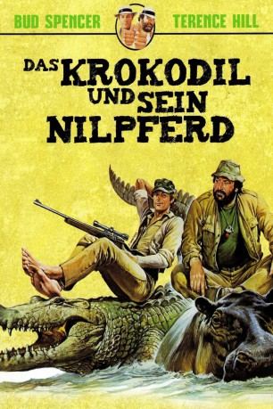

#4380 Das Krokodil und sein Nilpferd
 
 IMDB-Wertung: 6.7 / 10
IMDB-Wertung: 6.7 / 10  Metascore: 0
Metascore: 0 
Südafrika: Tom, wegen seines Aussehens Nilpferd genannt, fährt mit seinem Bus reiche Touristen und Großwildjäger durch den Busch. Was seine Gäste nicht wissen: Als Tierliebhaber lädt er die Gewehre mit Platzpatronen. Sein Bruder Slim engagiert sich ebenfalls für die Natur. Diese Idylle stört der hinterlistige Spekulant Mr. Ormond. Er plant die Eingeborenen um ihr Land zu bringen und ein Safari-Paradies für das Jet-Set aufzuziehen. Das können Slim und Tom nicht dulden.
Jahr: 1979
Dauer: 99 Minuten
FSK: 12
Land: Studio: TobisTonspuren:
Untertitel:
Auflösung: 1080p (1920x1080) Größe: 8335 MB
Genre: Action, Komödie, Abenteuer
Regisseur: Italo Zingarelli
Drehbuch: Jac Schaeffer
Soundtrack:
Darsteller:
 Terence Hill als Slim
Terence Hill als Slim Bud Spencer als Tom
Bud Spencer als Tom- Joe Bugner als Ormond
- May Dlamini als Mama Leone
- Dawn Jürgens als Stella, Slim's lady-love
- Malcolm Kirk als Ormond's bald henchman
- Ben Masinga als Jason, the doctor
- Les Marcowitz als Trixie, the Midget
- Johan Naude als Ormond's chief henchman, the Russian
- Nic van Rensburg als
- Hugh Rouse als Police Captain, arresting Slim and Tom
- Mike Schutte als Ormond's henchman, German version: Lumpi
- Kosie Smith als Ormond's henchman with moustache, German version: Kopf, wie 'n Hauklotz
- Joseph Szucs als
- Sandy Nkomo als Senghor, Stella's father
- Tony Binarelli als Gambler on market with eye patch , uncredited
Datei: X:\Person\Bud Spencer + Terence Hill\Krokodil und sein Nilpferd, Das (1979, FSK12, 1920x1080).mkv seit 13.09.2016
Festplatte: HD Collection-7+mehr(A-Z)+Person
 Es gibt insgesamt 43 Filme in der Gruppe 'Person\Bud Spencer + Terence Hill'
Es gibt insgesamt 43 Filme in der Gruppe 'Person\Bud Spencer + Terence Hill'